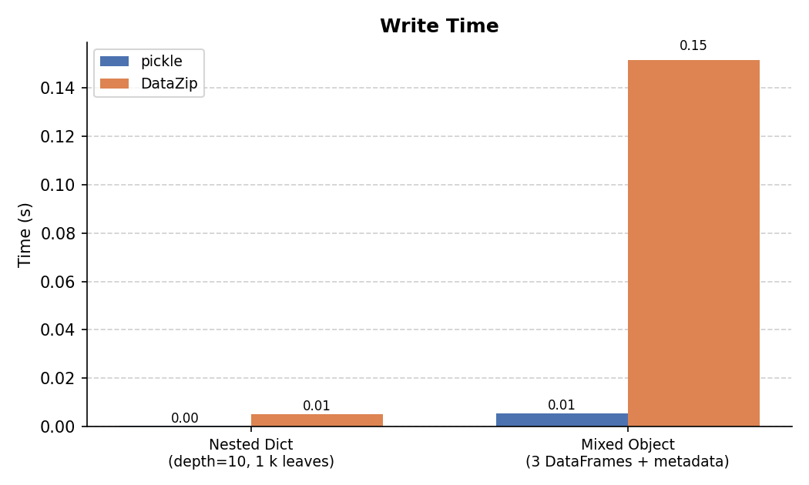
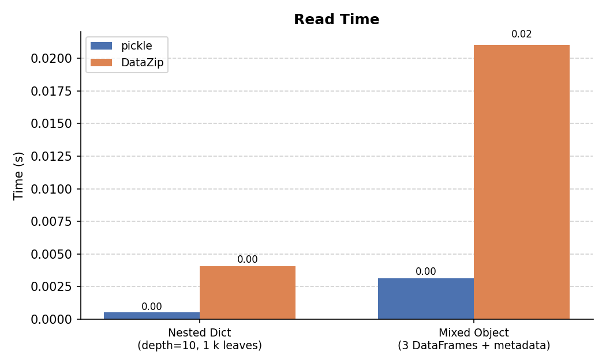
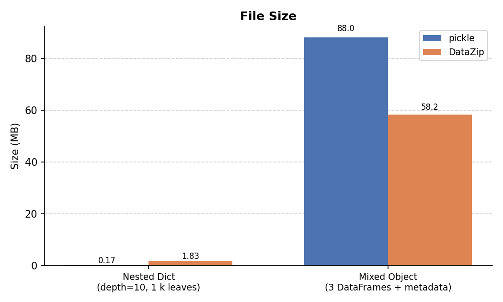

Performance¶
This page compares DataZip against Python's built-in pickle module across two
representative workloads, measuring write time, read time, and output file
size. The figures and table below were produced by running
docs/benchmarks.py
from the repository root.
Methodology¶
| Parameter | Value |
|---|---|
| Repetitions | 7 (slowest dropped) |
| Timing | time.perf_counter() |
| I/O target | In-memory BytesIO (eliminates disk variability) |
| Machine | Apple M-series, macOS |
Test objects¶
Nested Dictionary — depth 10, branching factor 2
: A recursively nested dict reaching 10 levels deep with 2 children per node
(2¹⁰ = 1,024 leaf nodes). Each leaf holds a list of 50 integers, a float,
a string, and a list of strings — representative of deeply nested
configuration or tree data.
Mixed Object — 3 DataFrames + metadata
: A dict containing one large DataFrame (500k rows × 20 cols), two medium
DataFrames (50k rows × 10 cols each), a nested config dict, a list of
200 category labels, and a description str. This represents a realistic
analysis result or model output object.
For DataZip, each top-level key is stored as a separate named entry in the
archive (the natural DataZip usage pattern). For pickle, the entire dict is
serialized as a single blob.
Write Time¶

For the nested dict, pickle's binary protocol is faster because DataZip serializes through JSON and wraps the result in a zip container.
For the mixed object, DataZip is slower on write because it encodes each DataFrame to Parquet (which involves columnar compression), whereas pickle writes raw NumPy buffers in a single pass.
Read Time¶

For the nested dict, pickle's read is faster for the same reasons as write.
For the mixed object, DataZip's read is slower than pickle's due to the Parquet decode step for each DataFrame, but remains practical even at these sizes.
File Size¶

This is where the trade-off becomes clear:
- Nested dicts: DataZip's JSON representation is larger than pickle's compact
binary format (~11× in this case). DataZip uses
ZIP_STORED(no compression) by default; passingcompression=ZIP_DEFLATEDwould reduce this significantly. - Mixed object: DataZip stores each DataFrame as Parquet, which applies columnar compression to numeric data. The combined archive is ~34% smaller than the pickle blob, and this advantage grows with larger DataFrames or more repetitive values.
Summary Table¶
Measurements from a single representative run:
| Benchmark | Write: pickle | Write: DataZip | Read: pickle | Read: DataZip | Size: pickle | Size: DataZip |
|---|---|---|---|---|---|---|
| Nested Dict (depth=10, 1 k leaves) | 0.000 s | 0.005 s | 0.001 s | 0.004 s | 0.17 MB | 1.83 MB |
| Mixed Object (3 DataFrames + metadata) | 0.006 s | 0.152 s | 0.003 s | 0.021 s | 88.00 MB | 58.19 MB |
When to use DataZip vs pickle¶
| DataZip | pickle | |
|---|---|---|
| Human-inspectable archive | ✓ | ✗ |
| Smaller file for DataFrames | ✓ | ✗ |
| Parquet interoperability | ✓ | ✗ |
| Faster for nested dicts | ✗ | ✓ |
| Safer (no arbitrary code exec on load) | ✓ | ✗ |
| Reproducible across Python versions | ✓ (mostly) | ✗ |
Reducing DataZip file size for nested structures
Pass compression=ZIP_DEFLATED to enable zip compression:
or via the mixin: